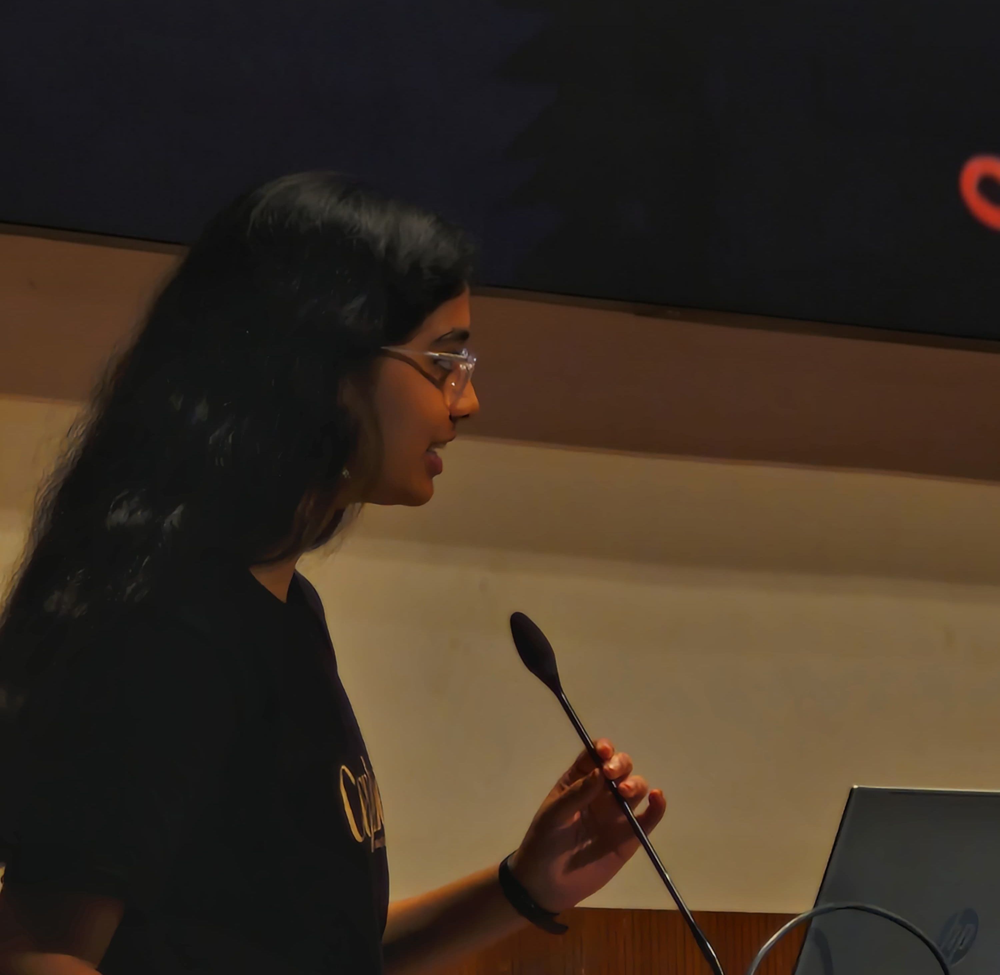

Engineering Physics Undergraduate • IIT Hyderabad
Exploring cosmology, gravitational-wave astronomy, neutrino astrophysics, and galaxy formation through observational data analysis and computational modelling.

The Universe is like an ocean, and we're only at the shore. Hi! I am an undergraduate student in Engineering Physics at the Indian Institute of Technology Hyderabad (2023–2027), pursuing a minor in Mathematics and Honors in Physics. My research interests lie in cosmology, gravitational-wave astronomy, black holes, dark matter and dark energy, neutron stars, and astro-particle physics. My current work spans gravitational-wave population studies, high-energy neutrino analyses using IceCube observations, galaxy-galaxy weak lensing, and cosmological simulations.
I am particularly interested in using observational data, statistical inference, and computational methods to investigate fundamental questions in astrophysics and cosmology.
CGPA: 9.45 / 10
Investigating black hole mass distributions through gravitational-wave population studies, using simulated universes and hierarchical inference.
Searching for high-energy neutrino emission from astrophysical sources using IceCube observations and statistical likelihood analyses.
Assessing weak-lensing inferred circular velocity profiles of isolated galaxies and investigating their implications for dark matter halo models and MOND.
Investigating the Baryonic Faber-Jackson Relation using galaxies generated by IllustrisTNG cosmological simulations.
Searching for high-energy neutrinos associated with Einstein Probe detected Fast X-ray Transients using 14 years of IceCube muon-track data.
Research contributions in neutrino astrophysics, cosmology, and gravitational-wave astronomy.
Astroparticle Physics, 185, 103312 (2027).
With Prof. Shantanu Desai, IIT Hyderabad.
Journal Article → arXiv →Physics of the Dark Universe, 54, 102457 (2026).
With Prof. Shantanu Desai, IIT Hyderabad.
Journal Article → arXiv →Manuscript submitted for publication in the Journal of High Energy Astrophysics.
With Prof. Shantanu Desai, IIT Hyderabad.
arXiv Preprint →Population studies of black hole masses using gravitational-wave sources and simulated universes.
Project under Prof. Suvodip Mukherjee, TIFR Mumbai, as part of NIUS.
Developed an independent parameter estimation pipeline for LISA (Laser Interferometer Space Antenna).
Studying the SPARC dataset to understand the behaviour of dark matter surface density across galaxies with different surface brightnesses.
B.Tech project with Prof. Shantanu Desai, IIT Hyderabad.
Studied general relativistic corrections to the Tolman-Oppenheimer-Volkov equation for compact stars.
Participated in the National Initiative on Undergraduate Science Astronomy Camp, including astronomy lectures and visits to IUCAA, Pune, and the Giant Metrewave Radio Telescope (GMRT).
Abstract accepted for a poster presentation at the 34th IAGRG Conference, St. Albert's College, Ernakulam, India, 7–9 January 2027.
Teaching Assistant for Electrodynamics, Special Relativity, Electricity and Magnetism, Mathematics for Physics, and Introduction to Programming.
Organised public stargazing sessions and presented astronomy lectures to school and college students. Conducted sessions on the Hot Big Bang, black holes, gravitational waves, and the IceCube detector.
Feel free to reach out!